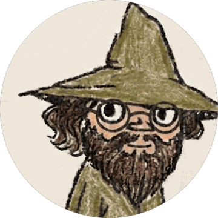

wander wildwood
I make small things, mostly for a little E Ink phone. They keep to themselves — no accounts, nothing sent anywhere, nothing that needs looking after. Most of the work is deciding what to leave out.
Apps for the Mudita Kompakt
The Kompakt is a phone with a small E Ink screen, no colour, and a slow redraw. These are built for that screen: black on white, no animation, lists you can read in sunlight.
None of them phone home. None carry analytics, accounts or crash reporting. Where an app has no business reaching the network, it holds no internet permission at all, so the question cannot arise.
Messaging
SMS and MMS, and a page your phone serves to your own computer so you can text from a keyboard.
Audio Reading
An audiobook player. Point it at a folder and it reads what is in it.
Birding
Names the birds it hears, offline, with BirdNET running on the phone itself.
Cycle
A cycle tracker with no permissions at all. What you write stays on the phone.
Go
A game of Go on a 9×9 board, against GNU Go or against the person opposite.
Installing
Each download is an .apk, the file an Android phone installs from. Open it on
the Kompakt and allow the installation when it asks. The first time, Android will want
permission to install from wherever you downloaded it.
Every release publishes a .sha256 beside the APK, so you can check the file you
got is the file that was built.
To be told when there is a new version, add any of the source links above to Obtainium, which watches a repository and offers you its releases.